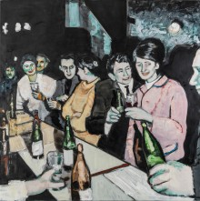

Outside/Inside
16. April bis 30. Juli 2023
Das Emil Schumacher Museum freut sich, am Sonntag, dem 16. April 2023, die neue Ausstellung „Outside/Inside“ eröffnen zu können. Mit der Ausstellung zeigt das Emil-Schumacher-Museum zwei zeitgenössische ungarische Künstler:innen, die am Puls der jüngsten ungarischen Entwicklungen von der postsozialistischen Demokratie in eine illiberale Demokratie den Zustand des Landes und seiner Gesellschaft beobachten.
Csaba Nemes‘ Arbeiten widmen sich dabei Themen wie Flüchtlingskrisen, Rassismus gegenüber der Roma-Gemeinschaft und der historischen Erinnerung an die sozialistische Vergangenheit. In seinen Kompositionen finden sich Landschaften, Häuser und öffentliche Räume. Seine Gemälde basieren dabei teilweise auf privaten oder historischen Fotografien der 1960er und 1970er Jahre, anhand derer der Künstler die generationenübergreifenden Entwicklungen im Sinne des kollektiven Gedächtnisses bis in die Gegenwart untersucht. Dia Zékány interessiert sich für die Gegenwart. Sie malt überfüllte, chaotische, unordentliche Innenräume von Messies. Ihr Thema ist eng mit ihrer sehr persönlichen Familiengeschichte verbunden und ihre Bilder repräsentieren auf emotionale Weise die soziokulturelle Tradition der kleinbürgerlichen Familien im heutigen Ungarn.
Zugleich mit der Perspektive zweier ungarischer Künstler auf das eigene Land, sind die Themen der Ausstellung europäisch und lassen sich exemplarisch auch auf die Lebenswirklichkeit in Deutschland bzw. in Hagen und Umgebung übertragen: gesellschaftlicher Wandel, die Folgen des Rückgangs der Industrie wie Arbeitslosigkeit und Verarmung, Erstarken von populistischen Tendenzen in der Politik, Fremdenfeindlichkeit und Rechtsextremismus, ebenso wie die Lebenssituation der Einzelnen in einer Konsumgesellschaft.
Die musikalische Begleitung der Eröffnung ist diesmal zugleich das Auftaktkonzert des neuen, auf zwei Spielzeiten ausgelegten Projektes des Philharmonischen Orchesters Hagen unter dem Titel Muzika Hagen. Der junge Zymbal-Virtuose Sándor Ürmös Jr. (*2003), der eigens für das Eröffnungskonzert mit seinem Instrument aus Ungarn anreist, entstammt einer Zymbal-Dynastie – einem bedeutenden Instrument der ungarischen Musikgeschichte.
Zur Ausstellung erscheint ein Katalog, herausgegeben von Rouven Lotz. Mit Beiträgen von László Győri, Ádám Kerpel-Fronius und Rouven Lotz, Hardcover, 176 Seiten, über 100 Abbildungen, ISBN: 978-3-98741-059-8, Verlag Kettler, Dortmund. Erhältlich im Buchhandel und unter info@esmh.de, 35,- Euro.
Download: Pressetext
Csaba Nemes, Settlement 02, 2010, Siedlung 02, 2010, Öl auf Leinwand / oil on canvas, 180 × 250 cm, Foto: Joachim Schwingel/Emil Schumacher Museum, Hagen.
Csaba Nemes, Yellow House, 2009, Gelbes Haus, 2009, Öl auf Leinwand / oil on canvas, 150 x 252 cm, Foto: Joachim Schwingel/Emil Schumacher Museum, Hagen .
Csaba Nemes, Greyscale 57 (Alteration), 2021, Graustufen 57 (Wandel), 2021, Öl auf Leinwand / oil on canvas 190 × 220 cm, Foto: Joachim Schwingel/Emil Schumacher Museum, Hagen. .

Csaba Nemes, Party (Father’s Name: Csaba Nemes), 2010, Party (Name des Vaters: Csaba Nemes), 2010, Öl auf Leinwand / oil on canvas, 200 × 200 cm, Foto: Joachim Schwingel/Emil Schumacher Museum, Hagen. .
Csaba Nemes, Party (Father’s Name: Csaba Nemes), 2010, Party (Name des Vaters: Csaba Nemes), 2010, Öl auf Leinwand / oil on canvas, 200 × 200 cm, Foto: Joachim Schwingel/Emil Schumacher Museum, Hagen. .
Csaba Nemes, Parallel to Reality, 2020, Parallel zur Wirklichkeit, 2020, Öl auf Leinwand / oil on canvas, 85 × 100 cm, Foto: Joachim Schwingel/Emil Schumacher Museum, Hagen.
Csaba Nemes, Making of a Fresco Showing the City, 2015, Entstehung eines Freskos, das die Stadt zeigt, 2015, Öl auf Leinwand / oil on canvas, 180 × 250 cm

Dia Zékány, Clean, Filthy III, 2016, Sauber, schmutzig III, 2016, Öl auf Leinwand / oil on canvas, 150 × 200 cm, Foto: Joachim Schwingel/Emil Schumacher Museum, Hagen. .

Dia Zékány, London Calling II, 2019, London ruft II, 2019, Öl auf Leinwand / oil on canvas 180 x 130 cm, Foto: Joachim Schwingel/Emil Schumacher Museum, Hagen. .


{kind=link}
{kind=link}
{kind=link}
{kind=link}
{kind=link}
{kind=link}
{kind=link}